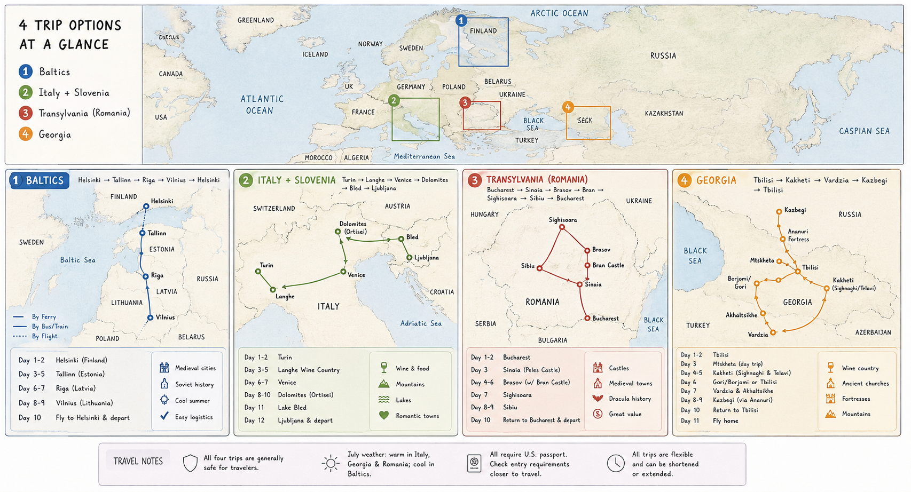

Hi Grace — here are the four trips we've been talking about, each written up properly so you can really feel them. Click into any one for the full day-by-day, the hotels, the food, and a gallery. When one wins you over, tap “This is the one for me.” Nothing's booked — this is just to see which way your heart leans.

Medieval old towns, a ferry across the Baltic, Tallinn's Medieval Days festival, café mornings, and a fairy-tale island castle. Exploration over resorts.
Barolo wine country, two nights of Venetian romance on the canals, three nights in the Dolomites, then Lake Bled and Ljubljana. Built around your love of Italy.
Fairy-tale castles, the Dracula legend, walled medieval towns, fortified Saxon villages, and an undiscovered wine country — the most storybook of the three.
Ancient qvevri wine in Kakheti, sulfur baths and fortresses in Tbilisi, the Vardzia cave monastery, and the Georgian Military Highway up to Mt Kazbek. The surprising former-Soviet contender.
The same idea, four different moods. Here's the gist of each.
| ① The Baltics | ② Italy & Slovenia | ③ Transylvania | ④ Georgia | |
|---|---|---|---|---|
| The feeling | Medieval, easy, fresh-aired | Romantic, indulgent, scenic | Storybook, atmospheric, adventurous | Ancient, surprising, off-beat |
| Length | ≈ 10 days | ≈ 13 days | ≈ 10 days | ≈ 12 days |
| Built around | Old towns & a festival | Wine, Venice & mountains | Castles & legend | Wine, fortresses & mountains |
| Getting around | Ferry, bus, one flight | Train & rental car | Private driver or SUV | Private driver |
| Best time | Early July (festival) | June–September | May–June or September | May–June or September |
| Cost feel | Comfortable middle | The splurge | Best value | Great value |
| Big draw | Tallinn Medieval Days | Venice & the Langhe | Bran & Peleș Castles | Kakheti wine & Mt Kazbek |
Tap a trip above to dive into the full guide.